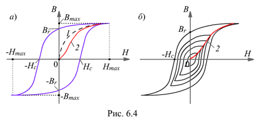

6.1.6.3. Петля гистерезиса
При протекании переменного тока в катушке с ферромагнитным сердечником происходит (в течение каждого периода тока) перемагничивание сердечника, которое на графике выглядит в виде петли - петли гистерезиса (рис. 6.4, а). Если первоначально ненамагниченный ферромагнетик намагнитить до насыщения (кривая 1), а затем уменьшить и потом снова увеличивать напряженность магнитного поля Н (ток в катушке), то изменение индукции В не будет следовать начальной кривой: каждому значению напряжённости соответствуют два значения магнитной индукции в зависимости от того, увеличивается или уменьшается напряженность поля.
Величину магнитной индукции ±Br, сохраняющуюся при Н = 0, называют остаточной индукцией; напряжённость магнитного поля ±Hc, при которой индукция обращается в нуль, называют коэрцитивной силой.
На рис. 6.4 обозначено: ±Hmax и ±Bmax - максимальные напряжённость и индукция магнитного поля в ферромагнетике; 2 - основная кривая намагничивания ферромагнетика, проведенная через вершины семейства гистерезисных кривых (рис. 6.4, б), каждая из которых соответствует определённому значению Hmax. Приводимые в справочниках зависимости В(Н) – это основные кривые намагничивания. Они незначительно отличаются от кривых первоначального намагничивания.
